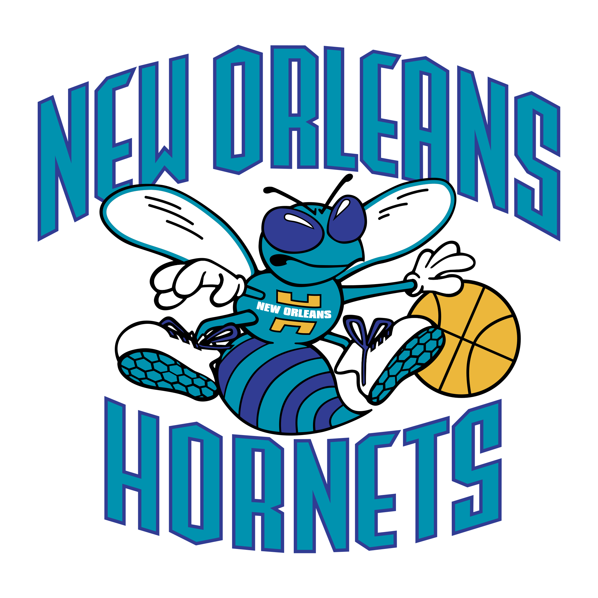

Malik Allen
2001-02 to 2010-11 · Career Map
 Miami,
Miami,  Charlotte,
Charlotte,  Chicago,
Chicago,  New Jersey,
New Jersey,  Dallas,
Dallas,  Milwaukee,
Milwaukee,  Denver,
Denver,  Orlando
Orlando
His best final NBA finish was #6 of 30, with the 2006-07 Chicago Bulls. In his 478 games for 8 teams over 10 seasons they went 221–257 (46.2%), −36 games under .500, with an average final finish of 16.3. The biggest one-season rise in his career: the Miami Heat went from #26 in 2002-03 to #8 in 2003-04.
Final NBA finish, season by season
Title Finals Other playoffs Missed the playoffs. #1 = champion; the dashed line is last place that season. Each point opens that season's final standings.
All 30 teams ranked in 2006-07, his best finish (#6)Teammate help
 Dwight Howard9.01 season
Dwight Howard9.01 season Carmelo Anthony4.01 season
Carmelo Anthony4.01 season Alonzo Mourning1.01 season
Alonzo Mourning1.01 season
Seasons with help 0.8 to 1.2 (4): best finish #6 of 30, 2006-07, worst #28 of 30, 2004-05.
Career
Regular seasons 1946-47 to 2026-27, games through Nov. 17, 2026. Records include 2026-27 to date; season counts and finishes use completed seasons. Each card opens its board. How we count.
Latest completed seasons
Season by season
Newest first; every header sorts. Final NBA finish is the team's rank among all teams that season (#1 = champion) and opens that season's standings. "Without him" uses the team-season window; the span line counts only the games between his first and last game for the team.
| 2010-11 | #10 of 30 | 52–30 63.4% | Lost 1st round 2–4 | 18 of 82 | 9–9 50.0% | 43–21 67.2%span: 36–18, gap −16.7 | −17.2 | |
| 2009-10 | #10 of 30 | 53–29 64.6% | Lost 1st round 2–4 | 51 of 82 | 36–15 70.6% | 17–14 54.8%span: 16–14, gap +17.3 | +15.7 | |
| 2008-09 | #20 of 30 | 34–48 41.5% | Missed the playoffs | 49 of 82 | 18–31 36.7% | 16–17 48.5%span: 16–17, gap −11.8 | −11.8 | |
| 2007-08 | #21 of 30 | 34–48 41.5% | Missed the playoffs | 48 of 82 | 21–27 43.8% | 2–3 40.0%span: 2–2, gap −6.2 | +3.7 | |
| 2007-08 | #11 of 30 | 51–31 62.2% | Lost 1st round 1–4  NOH | 25 of 82 | 13–12 52.0% | 4–2 66.7%span: 3–1, gap −23.0 | −14.7 | |
| 2006-07 | #6 of 30 | 49–33 59.8% | Lost conf semis 2–4 | 60 of 82 | 35–25 58.3% | 14–8 63.6%span: 14–8, gap −5.3 | −5.3 | |
| 2005-06 | #14 of 30 | 41–41 50.0% | Lost 1st round 2–4 | 54 of 82 | 28–26 51.9% | 13–15 46.4%span: 13–15, gap +5.4 | +5.4 | |
| 2004-05 | #4 of 30 | 59–23 72.0% | Lost conf finals 3–4 | 14 of 82 | 9–5 64.3% | 31–11 73.8%span: 31–11, gap −9.5 | −9.5 | |
| 2004-05 | #28 of 30 | 18–64 22.0% | Missed the playoffs | 22 of 82 | 4–18 18.2% | 3–6 33.3%span: 3–5, gap −19.3 | −15.2 | |
| 2003-04 | #8 of 29 | 42–40 51.2% | Lost conf semis 2–4 | 45 of 82 | 20–25 44.4% | 22–15 59.5%span: 22–15, gap −15.0 | −15.0 | |
| 2002-03 | #26 of 29 | 25–57 30.5% | Missed the playoffs | 80 of 82 | 24–56 30.0% | 1–1 50.0%span: 1–1, gap −20.0 | −20.0 | |
| 2001-02 | #20 of 29 | 36–46 43.9% | Missed the playoffs | 12 of 82 | 4–8 33.3% | 32–38 45.7%span: 30–26, gap −20.2 | −12.4 |
On/off, starts and close games
From the lineup data, 1996-97 on. On/off is net points per 100 possessions with him on the floor minus off, a different unit from the win-rate gaps. Started and off the bench are team records in those games; close games are those within 5 points in the last 5 minutes with him on the floor.
| 2010-11 | −23.0 | N/A | 9–9 50.0% | N/A | |
| 2009-10 | −23.7 | 2–1 66.7% | 34–14 70.8% | 2–0 100.0% | |
| 2008-09 | +2.3 | 2–1 66.7% | 16–30 34.8% | 2–4 33.3% | |
| 2007-08 | −1.5 | 6–6 50.0% | 15–21 41.7% | 4–3 57.1% | |
| 2007-08 | +4.8 | 2–2 50.0% | 11–10 52.4% | 2–3 40.0% | |
| 2006-07 | −0.6 | 0–1 0.0% | 35–24 59.3% | 4–3 57.1% | |
| 2005-06 | +1.7 | 11–9 55.0% | 17–17 50.0% | 4–1 80.0% | |
| 2004-05 | −13.5 | N/A | 9–5 64.3% | 3–1 75.0% | |
| 2004-05 | −0.5 | 0–1 0.0% | 4–17 19.0% | 0–3 0.0% | |
| 2003-04 | −6.9 | 1–5 16.7% | 19–20 48.7% | 1–2 33.3% | |
| 2002-03 | −5.5 | 22–51 30.1% | 2–5 28.6% | 7–21 25.0% | |
| 2001-02 | +4.7 | 1–1 50.0% | 3–7 30.0% | 0–1 0.0% |
Teammate help by season
Help = Teammates Score points for honors won that season by teammates who shared a game with him. How help works.
- 2010-11
 Orlando
Dwight Howard DPOYAll-NBA 1stAll-StarAll-Def 1st15 g
Orlando
Dwight Howard DPOYAll-NBA 1stAll-StarAll-Def 1st15 g
More: last season's honors and other teammates
Help coming in (teammates' honors the season before): 9.0
Other teammates (no honors that season): Jameer Nelson 15 g, Brandon Bass 15 g, Ryan Anderson 14 g, Chris Duhon 12 g, Jason Richardson 12 g, Quentin Richardson 12 g, Hidayet Turkoglu 12 g, Earl Clark 10 g, Gilbert Arenas 8 g, JJ Redick 6 g, Rashard Lewis 5 g, Jason Williams 5 g, Vince Carter 5 g, Marcin Gortat 5 g and 1 more
- 2009-10
 Denver
Carmelo Anthony All-NBA 2ndAll-Star46 gChauncey Billups All-Star47 g
Denver
Carmelo Anthony All-NBA 2ndAll-Star46 gChauncey Billups All-Star47 g
More: last season's honors and other teammates
Help coming in (teammates' honors the season before): 5.0
Other teammates (no honors that season): Nenê 51 g, Arron Afflalo 51 g, JR Smith 45 g, Chris Andersen 45 g, Joey Graham 44 g, Ty Lawson 37 g, Anthony Carter 36 g, Johan Petro 31 g, Kenyon Martin 30 g, Renaldo Balkman 10 g
- 2008-09
 MilwaukeeNo honored teammate
MilwaukeeNo honored teammate - 2007-08
 New Jersey
New Jersey
 Jason Kidd All-Star47 g
Jason Kidd All-Star47 g
More: last season's honors and other teammates
Help coming in (teammates' honors the season before): 2.6 · from Vince Carter (1.0), Marcus D. Williams (0.1)
Other teammates (no honors that season): Richard Jefferson 48 g, Bostjan Nachbar 44 g, Sean Williams 43 g, Vince Carter 43 g, Josh Boone 41 g, Jason Collins 39 g, Antoine Wright 38 g, Darrell Armstrong 33 g, Jamaal Magloire 24 g, Marcus D. Williams 20 g, Nenad Krstic 17 g, Eddie Gill 12 g, Billy Thomas 3 g, Stromile Swift 3 g
- 2007-08
 Dallas
Dallas
 Dirk Nowitzki All-NBA 2ndAll-Star20 gJason Kidd All-Star25 g
Dirk Nowitzki All-NBA 2ndAll-Star20 gJason Kidd All-Star25 g
More: last season's honors and other teammates
Help coming in (teammates' honors the season before): 13.5 · from Josh Howard (1.0)
Other teammates (no honors that season): Erick Dampier 25 g, Jason Terry 25 g, Brandon Bass 25 g, Josh Howard 24 g, Devean George 21 g, Jerry Stackhouse 18 g, Juwan Howard 16 g, Tyronn Lue 14 g, Antoine Wright 13 g, Eddie Jones 9 g, Jose Juan Barea 8 g, Jamaal Magloire 6 g
- 2006-07
 Chicago
Chicago
 Ben Wallace All-Def 2nd56 g
Ben Wallace All-Def 2nd56 g Kirk Hinrich All-Def 2nd58 gTyrus Thomas All-Rookie 2nd51 g
Kirk Hinrich All-Def 2nd58 gTyrus Thomas All-Rookie 2nd51 g
More: last season's honors and other teammates
Help coming in (teammates' honors the season before): 8.0
Other teammates (no honors that season): Luol Deng 60 g, Ben Gordon 60 g, Chris Duhon 57 g, PJ Brown 52 g, Thabo Sefolosha 50 g, Adrian Griffin 40 g, Andres Nocioni 39 g, Mike Sweetney 34 g, Viktor Khryapa 24 g, Andre Barrett 4 g
- 2005-06ChicagoNo honored teammate
More: last season's honors
Help coming in (teammates' honors the season before): 1.0 · from Ben Gordon (0.8), Luol Deng (0.2)
- 2004-05
 Miami
Miami
 Shaquille O'Neal All-NBA 1stAll-Star13 g
Shaquille O'Neal All-NBA 1stAll-Star13 g Dwyane Wade All-NBA 2ndAll-StarAll-Def 2nd12 g
Dwyane Wade All-NBA 2ndAll-StarAll-Def 2nd12 g
More: last season's honors and other teammates
Help coming in (teammates' honors the season before): 5.9 · from Udonis Haslem (0.1)
Other teammates (no honors that season): Udonis Haslem 14 g, Eddie Jones 14 g, Damon Jones 14 g, Rasual Butler 13 g, Michael Doleac 13 g, Keyon Dooling 10 g, Shandon Anderson 8 g, Wesley Person 7 g, Wang Zhizhi 7 g
- 2004-05
 Charlotte
Charlotte
 Emeka Okafor ROYAll-Rookie 1st21 g
Emeka Okafor ROYAll-Rookie 1st21 g
More: last season's honors and other teammates
Help coming in (teammates' honors the season before): 0
Other teammates (no honors that season): Melvin Ely 22 g, Jason Kapono 21 g, Keith Bogans 20 g, Jason Hart 20 g, Brevin Knight 19 g, Matt Carroll 18 g, Gerald Wallace 17 g, Primoz Brezec 16 g, Cory Alexander 14 g, Theron Smith 9 g, Bernard Robinson 8 g, Kareem Rush 3 g
- 2003-04Miami
Dwyane Wade All-Rookie 1st26 g
 Udonis Haslem All-Rookie 2nd38 g
Udonis Haslem All-Rookie 2nd38 g
More: last season's honors and other teammates
Help coming in (teammates' honors the season before): 0.2 · from Caron Butler (0.2)
Other teammates (no honors that season): Rafer Alston 45 g, Eddie Jones 44 g, Lamar Odom 43 g, Brian Grant 39 g, Caron Butler 38 g, Rasual Butler 27 g, John Wallace 21 g, Bimbo Coles 19 g, Loren Woods 18 g, Wang Zhizhi 14 g, Samaki Walker 13 g, Kirk Penney 2 g, Jerome Beasley 1 g
- 2002-03Miami
 Caron Butler All-Rookie 1st76 g
Caron Butler All-Rookie 1st76 g
More: last season's honors and other teammates
Help coming in (teammates' honors the season before): 0
Other teammates (no honors that season): Brian Grant 80 g, Vladimir Stepania 77 g, Mike James 76 g, Rasual Butler 71 g, Travis Best 70 g, Eddie House 54 g, LaPhonso Ellis 53 g, Anthony Carter 48 g, Eddie Jones 45 g, Sean Lampley 35 g, Sean Marks 23 g, Ken Johnson 16 g
- 2001-02Miami
Alonzo Mourning All-Star11 g
More: last season's honors and other teammates
Help coming in (teammates' honors the season before): 1.0
Other teammates (no honors that season): Rod Strickland 12 g, Eddie Jones 12 g, Kendall Gill 11 g, Vladimir Stepania 11 g, Eddie House 10 g, Brian Grant 9 g, Anthony Carter 9 g, Chris Gatling 8 g, Jim Jackson 6 g, Mike James 6 g, Sean Marks 6 g, LaPhonso Ellis 5 g, Ernest Brown 1 g
Compare with a peer
- Malik Allen vs Ronald MurrayCareers centered on 2005-06 and 2006-07; help 1.9 and 1.8 points per season; own honors 0.0 and 0.0 per season; 478 and 487 games.
 Malik Allen vs Bobby SimmonsCareers centered on 2005-06 and 2005-06; help 1.9 and 1.8 points per season; own honors 0.0 and 0.0 per season; 478 and 465 games.
Malik Allen vs Bobby SimmonsCareers centered on 2005-06 and 2005-06; help 1.9 and 1.8 points per season; own honors 0.0 and 0.0 per season; 478 and 465 games.- Malik Allen vs Darius SongailaCareers centered on 2005-06 and 2006-07; help 1.9 and 1.8 points per season; own honors 0.0 and 0.0 per season; 478 and 495 games.
Record against each opponent
- Best regular-season record against one franchise: 14–6 (70.0%) against the Atlanta Hawks in 20 games.
- Toughest regular-season record against one franchise: 7–14 (33.3%) against the Philadelphia 76ers in 21 games.
- Most playoff series against one franchise: 2 against the New Orleans Pelicans, 1–1 in series and 4–3 in games.
Regular season, completed seasons: 478 games, 221–257, against 30 franchises. Grouped by franchise (named as today); game lists keep each team's name that season.
| Games list | |||||||
|---|---|---|---|---|---|---|---|
| 24 | 16–8 | 66.7% | +8 | N/A | 2001-02 to 2010-11 | ||
| 23 | 9–14 | 39.1% | −5 | 0–1 (2–4 in games) | 2001-02 to 2010-11 | ||
| 21 | 9–12 | 42.9% | −3 | N/A | 2001-02 to 2010-11 | ||
| 21 | 7–14 | 33.3% | −7 | N/A | 2002-03 to 2010-11 | ||
| 20 | 14–6 | 70.0% | +8 | 0–1 (1–0 in games) | 2002-03 to 2010-11 | ||
| 20 | 11–9 | 55.0% | +2 | N/A | 2002-03 to 2010-11 | ||
| 20 | 7–13 | 35.0% | −6 | 0–1 (1–2 in games) | 2002-03 to 2010-11 | ||
| 20 | 8–12 | 40.0% | −4 | N/A | 2001-02 to 2009-10 | ||
| 19 | 5–14 | 26.3% | −9 | N/A | 2002-03 to 2010-11 | ||
| 19 | 10–9 | 52.6% | +1 | N/A | 2001-02 to 2009-10 | ||
| 18 | 9–9 | 50.0% | 0 | N/A | 2001-02 to 2010-11 | ||
| 17 | 8–9 | 47.1% | −1 | N/A | 2002-03 to 2009-10 | ||
| 17 | 9–8 | 52.9% | +1 | N/A | 2002-03 to 2010-11 | ||
| 17 | 9–8 | 52.9% | +1 | N/A | 2002-03 to 2010-11 | ||
| 15 | 11–4 | 73.3% | +7 | N/A | 2001-02 to 2010-11 | ||
| 15 | 7–8 | 46.7% | −1 | N/A | 2002-03 to 2009-10 | ||
| 15 | 5–10 | 33.3% | −5 | 1–1 (4–3 in games) | 2002-03 to 2009-10 | ||
| 14 | 6–8 | 42.9% | −2 | N/A | 2001-02 to 2009-10 | ||
| 13 | 4–9 | 30.8% | −5 | N/A | 2001-02 to 2008-09 | ||
| 13 | 9–4 | 69.2% | +5 | N/A | 2002-03 to 2009-10 | ||
| 13 | 5–8 | 38.5% | −3 | N/A | 2002-03 to 2009-10 | ||
| 13 | 8–5 | 61.5% | +3 | N/A | 2002-03 to 2009-10 | ||
| 13 | 5–8 | 38.5% | −3 | N/A | 2001-02 to 2010-11 | ||
| 13 | 2–11 | 15.4% | −9 | 0–1 (2–2 in games) | 2001-02 to 2010-11 | ||
| 12 | 7–5 | 58.3% | +2 | N/A | 2002-03 to 2009-10 | ||
| 12 | 4–8 | 33.3% | −4 | N/A | 2002-03 to 2008-09 | ||
| 11 | 5–6 | 45.5% | −1 | N/A | 2002-03 to 2009-10 | ||
| 11 | 5–6 | 45.5% | −1 | N/A | 2002-03 to 2009-10 | ||
| 11 | 6–5 | 54.5% | +1 | 1–1 (4–4 in games) | 2004-05 to 2009-10 | ||
| 8 | 1–7 | 12.5% | −6 | N/A | 2002-03 to 2009-10 |
Rows add up to his career record in his games. A playoff series counts when he played in it; early round-robin games show as games only. How we count.
Playoffs, with and without him
| 2010-11 | Lost in the first round 2–4 to | #10 of 30 | 1 of 6 | 1–0 100.0% | 1–4 20.0% | +80.0 | |
| 2009-10 | Lost in the first round 2–4 to | #10 of 30 | 4 of 6 | 2–2 50.0% | 0–2 0.0% | +50.0 | |
| 2007-08 | Lost in the first round 1–4 to New Orleans | #11 of 30 | 3 of 5 | 1–2 33.3% | 0–2 0.0% | +33.3 | |
| 2006-07 | Lost in the conference semifinals 2–4 to | #6 of 30 | 5 of 10 | 3–2 60.0% | 3–2 60.0% | 0.0 | |
| 2005-06 | Lost in the first round 2–4 to | #14 of 30 | 6 of 6 | 2–4 33.3% | N/A | N/A | |
| 2003-04 | Lost in the conference semifinals 2–4 to | #8 of 29 | 10 of 13 | 5–5 50.0% | 1–2 33.3% | +16.7 |
Arrival and departure
Team wins per 82 games the season before he arrived vs his first season there, and his last season vs the season after he left. Per 82 so short seasons compare fairly. These are team records, not a measure of what he did.
| Left | 2011-12 | 2010-11: 52–30 52.0 per 82 | 2011-12: 37–29 46.0 per 82 | −6.0 wins | |
| Arrived | 2010-11 | 2009-10: 59–23 59.0 per 82 | 2010-11: 52–30 52.0 per 82 | −7.0 wins | |
| Left | 2010-11 | 2009-10: 53–29 53.0 per 82 | 2010-11: 50–32 50.0 per 82 | −3.0 wins | |
| Arrived | 2009-10 | 2008-09: 54–28 54.0 per 82 | 2009-10: 53–29 53.0 per 82 | −1.0 wins | |
| Left | 2009-10 | 2008-09: 34–48 34.0 per 82 | 2009-10: 46–36 46.0 per 82 | +12.0 wins | |
| Arrived | 2008-09 | 2007-08: 26–56 26.0 per 82 | 2008-09: 34–48 34.0 per 82 | +8.0 wins | |
| Left | 2008-09 | 2007-08: 34–48 34.0 per 82 | 2008-09: 34–48 34.0 per 82 | +0.0 wins | |
| Left | 2008-09 | 2007-08: 51–31 51.0 per 82 | 2008-09: 50–32 50.0 per 82 | −1.0 wins | |
| Arrived | 2007-08 | 2006-07: 41–41 41.0 per 82 | 2007-08: 34–48 34.0 per 82 | −7.0 wins | |
| Arrived | 2007-08 | 2006-07: 67–15 67.0 per 82 | 2007-08: 51–31 51.0 per 82 | −16.0 wins | |
| Left | 2007-08 | 2006-07: 49–33 49.0 per 82 | 2007-08: 33–49 33.0 per 82 | −16.0 wins | |
| Arrived | 2005-06 | 2004-05: 47–35 47.0 per 82 | 2005-06: 41–41 41.0 per 82 | −6.0 wins | |
| Left | 2005-06 | 2004-05: 59–23 59.0 per 82 | 2005-06: 52–30 52.0 per 82 | −7.0 wins | |
| Left | 2005-06 | 2004-05: 18–64 18.0 per 82 | 2005-06: 26–56 26.0 per 82 | +8.0 wins | |
| Arrived | 2001-02 | 2000-01: 50–32 50.0 per 82 | 2001-02: 36–46 36.0 per 82 | −14.0 wins |
Seasons split between teams
Each team's record before his first game for it, inside his window (games with and without him) and after his last game, in the seasons he played for two or more teams.
| 2007-08 | Oct. 31, 2007 to Feb. 12, 2008 | N/A | 23–30 43.4% | 11–18 37.9% | 48 | |
| 2007-08 | Feb. 20, 2008 to April 16, 2008 | 34–17 66.7% | 17–14 54.8% | N/A | 25 | |
| 2004-05 | Nov. 3, 2004 to Feb. 23, 2005 | N/A | 40–16 71.4% | 19–7 73.1% | 14 | |
| 2004-05 | Feb. 26, 2005 to April 20, 2005 | 11–40 21.6% | 7–24 22.6% | N/A | 22 |
Best duos
Team record in regular-season games both played, top 10 by win %, at least 50 games together.
 Nenê
36–15 70.6%
Nenê
36–15 70.6% Arron Afflalo
36–15 70.6%
Arron Afflalo
36–15 70.6%- Tyrus Thomas 30–21 58.8%
- Ben Wallace
32–24 57.1%
 Thabo Sefolosha
28–22 56.0%
Thabo Sefolosha
28–22 56.0%- PJ Brown 29–23 55.8%
- Kirk Hinrich
62–50 55.4%
- Chris Duhon 64–52 55.2%
 Luol Deng
61–50 55.0%
Luol Deng
61–50 55.0% Ben Gordon
62–51 54.9%
Ben Gordon
62–51 54.9%